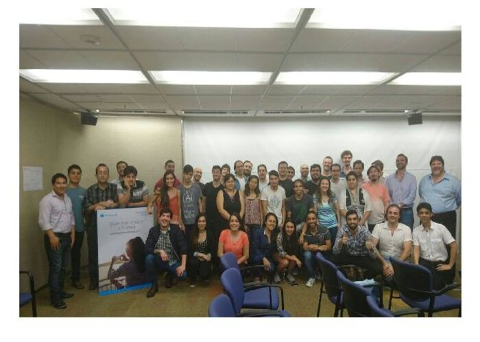

STARTUP WEEKEND SPACE 2016
Startup Weekend Space fué el primer evento a nivel regional de 54 horas de duración únicamente enfocado en crear nuevos emprendimientos utilizando datos de observación de la tierra. Se realizó en las oficinas de Microsoft Argentina y contó con el apoyo de distintas instituciones, empresas y organizaciones locales e internacionales.

STARTUP WEEKEND AI 2020
Startup Weekend AI fue el primer evento digital que se realizo en Buenos Aires enfocado en educación, salud y turismo, conto con el apoyo de organizaciones como IBM, AWS (Amazon Web Services), la usina de emprendedores de la camára argentina de comercio, entre otros para acompañar a los equipos en el armado de soluciones tecnológicas para presentar en el ultimo día del evento la solución ante el jurado.